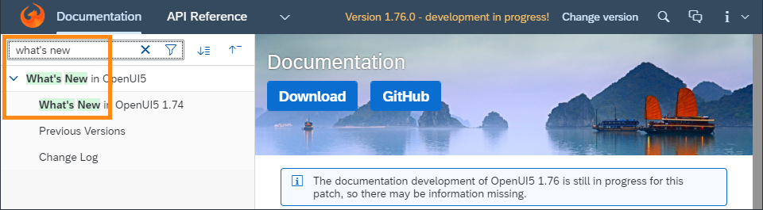

What's New in SAPUI5 1.75
What's New in SAPUI5 1.75
New Features
| Accessibility Enhancement
SAPUI5 is following the SAP ‘s updated design and development guidelines, as well as the testing procedures and accessibility reporting, that are based on WCAG 2.1 level A and AA. |
| Browser and Platform Support SAPUI5 now supports the latest Chromium-based version of Microsoft Edge. The next long-term maintenance SAPUI5 release that comes after 1.71 will be the last release to support the legacy EdgeHTML-based version of Microsoft Edge. For more information, see Browser and Platform Support. |
| UI Adaptation: Embedding External Content If you have enabled an app for UI adaptation (see SAPUI5 Flexibility: Enable Your App for UI Adaptation), users of this app can now embed external content, such as maps or videos, as iFrames. This feature is available for key users at runtime in UI adaptation mode as well as for developers within the SAPUI5 Visual Editor in SAP Web IDE. |
Improved Features
|
Card Explorer We have introduced a schema validation feature in our samples in the Card Explorer. With this option, developers can see a more detailed report for mistakes inside the card manifest. Things like wrong names of properties, bad property types or bad structures are easily spotted. For more information, explore the samples in the Card Explorer. |
|
Currency Codes When displaying ISO currency codes using
If currency symbols are enabled (formatting option
|
|
SAPUI5 OData V2 Messages With the new version of the SAPUI5 OData V2 model, the target of server messages is shortened by
removing associated pairs of navigation properties. For example,
a
|
|
SAPUI5 OData V4 Model The new version of the SAPUI5 OData V4 model introduces the following features:
Restriction
Due to the limited feature scope of this
version of the SAPUI5 OData V4 model, check that all required features are in place
before developing applications. Double-check the detailed
documentation of the features, as certain parts of a feature may
be missing. While we aim to be compatible with existing
controls, some controls might not work due to small
incompatibilities compared to
For more information, see OData V4 Model, the API Reference, and the Samples in the Demo Kit. |
|
Title Support in Nested Components The The router of a nested component may also have a
For more information, see Using the title Property in Targets and Enabling Routing in Nested Components. In addition, the Sample application introduced in the previous release to feature routing of nested components has been enhanced. It now shows how the new title definition and title propagation could be used in an application built with nested (or reuse) components. |
Improved Controls
|
We have introduced the initial page floorplan as a Demo Kit sample. The floorplan allows users to navigate to a single object to view or edit it. The interaction point on the screen is a single input field and it relies on assisted input to direct the user to the object in as few steps as possible (using features such as value help and live search). For more information, see the CardSAP Fiori Design Guidelines and the Sample. |
sap.m.LinkThe
|
sap.m.MessageBoxWe have
introduced a new |
sap.m.ObjectStatusWe
have enhanced the |
|
|
|
We have enhanced the capabilities of the Adaptive Card (Experimental).
For more information, see the Adaptive Card in the Card Explorer. |
|
A more comprehensive message text is now shown if no data is available because all table columns are hidden. For more information, see the Sample. |
SAP Fiori Elements
|
List Report and Object Page
|
|
UX Improvement
|
Demo Kit Improvements
|
Search Highlighting in the Documentation and Samples sections The search highlighting functionality is now also available in the Documentation tree filter and the Samples list. 
 |
In this section:
Parent topic: Previous Versions
Previous:
Next:
Related information
- What's New in SAPUI5 1.86
- What's New in SAPUI5 1.85
- What's New in SAPUI5 1.84
- What's New in SAPUI5 1.82
- What's New in SAPUI5 1.81
- What's New in SAPUI5 1.80
- What's New in SAPUI5 1.79
- What's New in SAPUI5 1.78
- What's New in SAPUI5 1.77
- What's New in SAPUI5 1.76
- What's New in SAPUI5 1.74
- What's New in SAPUI5 1.73
- What's New in SAPUI5 1.72
- What's New in SAPUI5 1.71
- What's New in SAPUI5 1.70
- What's New in SAPUI5 1.69
- What's New in SAPUI5 1.68
- What's New in SAPUI5 1.67
- What's New in SAPUI5 1.66
- What's New in SAPUI5 1.65
- What's New in SAPUI5 1.64
- What's New in SAPUI5 1.63
- What's New in SAPUI5 1.62
- What's New in SAPUI5 1.61
- What's New in SAPUI5 1.60
- What's New in SAPUI5 1.58
- What's New in SAPUI5 1.56
- What's New in SAPUI5 1.54
- What's New in SAPUI5 1.52
- What's New in SAPUI5 1.50
- What's New in SAPUI5 1.48
- What's New in SAPUI5 1.46
- What's New in SAPUI5 1.44
- What's New in SAPUI5 1.42
- What's New in SAPUI5 1.40
- What's New in SAPUI5 1.38